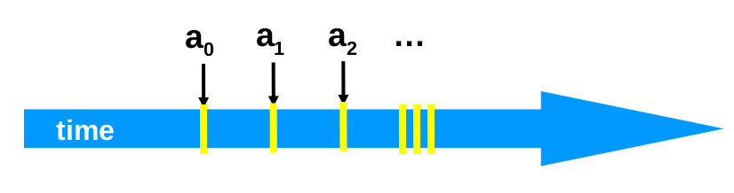

Lecture 5
Mutual Exclusion
Events
- An event of thread is
- Instantaneous
- Even if two events attempt to execute at exactly the same moment in time, one will execute before the other.
- Has no simultaneous events
- Instantaneous
- A thread is a sequence, of events
- indicates order or precedence

-
Thread events include the following:
- Assign to shared variable
- Assign to local variable
- Method invocation
- Method return
-
Essentially every low level operation is a thread event.
-
Threads can be represented as state machines/ finite state automata
- Thread State
- Program counter
- (Thread) Local variables
- System State
- Shared variables
- Union of thread states
- Thread State
Concurrency
- Two or more threads executing at the same time.
- Their execution is interleaved on the timeline
- They are not necessarily independent as they may be interacting during the course of execution.

Where yellow shows events from thread and green shows events from thread
Intervals
-
An interval represents the time between events and
-
Intervals may overlap or be disjoint.
- In critial sections we want them to be disjoint.
-
We can define precedence of intervals as
- iff
- The end of event is before the start of event
- iff
Precedence Ordering
-
A precedence order is a partial order
-
Partial orders have the following properties:
- Irreflexive
- Never true that
- Antisymmetric
- Transitive
- Irreflexive
-
Interestingly, and can both be false, this is what makes it a partial order
-
Total orders on the other hand are:
- Irreflexive
- Antisymmetric
- Transitive
- Except that Trichotomy
Repeated events
while (mumble){ a_0 ; a_1 }
Here we have to distinguish between each run of the same events
i.e. representing the occurrence of event and is the occurrence of interval
We make variables indivisible using locks, i.e. able to withstand attempted concurrent accesses.
Locks
In Java, we can use the Lock interface
public interface Lock { public void lock(); public void unlock(); }
public class Counter { private long value; private Lock lock; public long getAndIncrement() { lock.lock(); try{ value ++; }finally{ lock.unlock(); } return temp; } }
Desired Properties of Locks
Mutual Exclusion:
- Let be the thread 's critical section execution
- Let be 's execution
- Then either or
Deadlock Free:
- If any thread calls
lock()then some thread will acquire it. - If some thread calls
lock()- And never returns
- then other threads must be completing
lock()andunlock()calls infinitely often.
- System as a whole makes progress
- even if individuals starve
Starvation Free:
- If some thread calls
lock()- it will eventually return
- Individual threads make progress
LockOne, for 2 threads
Note: is the current thread and is the other thread
class LockOne implements Lock { private boolean[] flag = new boolean[2] public void lock(){ int i = ThreadID.get(); int j = 1-i; flag[i] = true; while (flag[j]) {/*wait*/} } public void unlock(){ int i = ThreadID.get(); flag[i] = false; } }
Proof LockOne Satisfies Mutual Exclusion
- Assume overlaps with
- Consider each thread's last read and write in the
lock()method before entering the critical section.
From the code:
From our assumption:
We can then see a cycle form between , therefore such a series of events is impossible due to it being a partial order.
Proof LockOne Satisfies Deadlock Freedom
- LockOne fails deadlock freedom as concurrent execution can deadlock.
- i.e. if both threads attempt access at the same time, both of the following occur:
flag[i] = true; while(flag[j]){}
flag[j] = true; while(flag[i]){}
LockTwo for 2 threads
public class LockTwo implements Lock { private int victim; public void lock() { victim = i; while (victim == i){/* wait */} } public void unlock(){} }
-
This lock works by allowing another thread to go before it, eventually another thread gives it permission to go and begins to wait itself.
-
LockTwo satisfies mutual exclusion
- if thread is in the CS then the victim = , due to boolean cannot be both 0 and 1.
-
It is not deadlock free
- sequential execution deadlocks
- i.e. no other thread tries to get the lock, the waiting thread is never released
- Concurrent execution does not.
- sequential execution deadlocks
Peterson's Algorithm
public void lock(){ flag[i] = true; victim = i; while (flag[j] && victim == i){/* wait */} } public void unlock(){ flag[i] = false; }
- In this lock the
flagvariable is used to signify interest in entering the CS. - The
victimagain is used to defer access to another thread. - The thread then waits while it is both interested and the victim
- To unlock the thread just removes the sign of interest
Mutual Exclusion for Peterson's Algorithm
From the code:
(1)
(2)
Assumption:
(3)
- Assume thread is the last thread to write to
victim
Combining these results in [1] [3] [2]
- From the end of [2] you can see that if reds
flag[B] == trueandvictim==Athen it could not have entered the critical section. quod erat demonstrandum
Deadlock Freedom for Peterson's Lock
- Thread blocked
- only at
whileloop - only if other thread's flag is
true - only if it is the victim
- only at
Starvation Freedom for Peterson's Lock
- Thread blocked only if repeatedly re-enters so that
flag[j] == true && victim=1 - When re-enters, it sets the
victimto so enters
All of these proofs have only been for 2 threads, what about the thread case?
Filter Algorithm for Threads
- There are waiting rooms called levels
- At each level
- at least one thread enters
- at least one thread is blocked at that level if many try to move to the next
- Only one thread makes it through a level at a time
- A thread at level is also at level
class Filter implements Lock{ int[] level; int[] victim; public Filter(int n){ level = new int[n]; victim = new int[n]; for (int i = 1; i<n; i++){ level[i] = 0; } } public void lock(){ for (int L = 1; L < n; L++){ level[i] = L; victim[L] = i; while (there is a thread at the same or a higher level and I am the victim){/*wait*/} } } public void unlock(){ level[i] = 0; } }
Claim of Filter Algorithm
- If you start at level
- At most threads enter
- Mutual exclusion at level
Induction Hypothesis
- No more than threads at level
- Induction step: by contradition
- Assume all at level enter level
- is last to write
victim[L] - is any other thread at level
- Show that must have seen in
level[L]and sincevictim[L] == A, it could not have entered
From the code:
(4)
(5)
By assumption that thread is last to write victim[L]:
(6)
- Combining these yields: [4] [6] [7]
- read
level[B] >= Landvictim[L]=Atherefore, A could not have entered
Filter Starvation Free
- Filter lock satisfies this property just as Peterson does
- However, it is not very fair as threads can be overtaken by others
Bounded Waiting
-
We want to enforce stronger fairness guarantees
-
Thread not overtaken too often
-
if starts before , then should enter the CS before
- What does start mean?
-
Divide
lock()method into 2 parts- Doorway interval
- Denoted
- Always finished in a finite number of steps
- Waiting interval
- Denoted
- May take unbounded number of steps
- Doorway interval
First-Come-First-Served
- For threads and :
- if
- 's doorway precedes 's doorway
- Then,
- 's critical section precedes 's critical section
- cannot overtake
- if
Fairness of Filter Lock
- The Filter Lock satisfies properties:
- No one starves
- But very weak fairness
- a waiting thread can be overtaken an arbitrary number of times
Bakery Algorithm
- Provides fairness via the First-Come-First-Served topology
- It does this by assigning each waiting thread a number adn the current lowest waiting number is served next
- Lexicographic order
-
- if or
-
class Bakery implements Lock{ boolean[] flag; Label[] label; public Bakery(int n){ flag = new boolean[n]; label; = new Label[n]; for (int i = 0; i<n; i++){ flag[i] = false; label[i] = 0; } } public void lock(){ flag[i] = true; label[i] = max(label[0],...,label[n-1])+1 while (there exist another waiting thread and that thread's label is less than mine){/*wait*/} } public void unlock(){ flag[i] = false; } }
-
This algorithm has no deadlock as there is always a thread with the earliest label
-
First-Come-First-Served can be demonstrated by:
- if then
- 's label is smaller
- And
- So sees
- smaller label for
- locked out while
flag[A]is true.
- if then
-
Mutual Exclusion can be shown by:
- Suppose and are in the CS together
- Suppose has the earlier label
- When entered it must have seen:
flag[A] == falseorlabel[A] > label[B]- But labels are strictly increasing so must have seen
flag[A] == false- Which contradict the assumption that has the earlier label impossible, Bakery satisfies mutual exclusion.
Impracticality of the Bakery Algorithm
The Bakery Algorithm isn't widely used due to its impracticality stemming from its need for Distinct variables
Shared Memory
Shared read/write memory locations called Registers. Here we assume that all reads and writes are atomic
There are different types of registers:
- Multi-Reader-Single-Writer (MRSW)
- Multi-Reader-Multi-Writer (MRMW)
- There are also SRMW and SRSW but they are not pertinent
Theorem
At least MRSW registers are needed to solve -thread deadlock-free mutual exclusion
Proof
Without -MRSW registers, with N threads at least one thread won't be able to express intent to enter the CS, diagrammatically:

We cannot tell if is in the Critical Section
The bakery algorithm actually uses MRSW registers
What if we use MRMW registers instead?
Bad News Theorem
At least MRMW registers are needed to solve deadlock-free mutual exclusion
i.e. it doesn't help us
Theorem,
Deadlock-free mutual exclusion for threads requires at least MRMW registers
Proof
assume one register suffices & derive contradiction